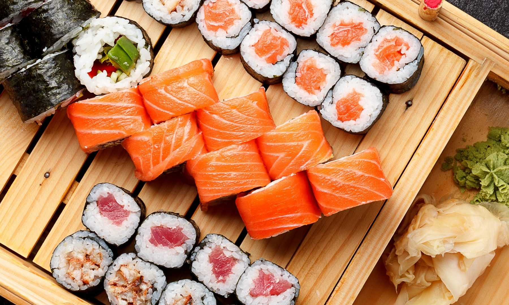
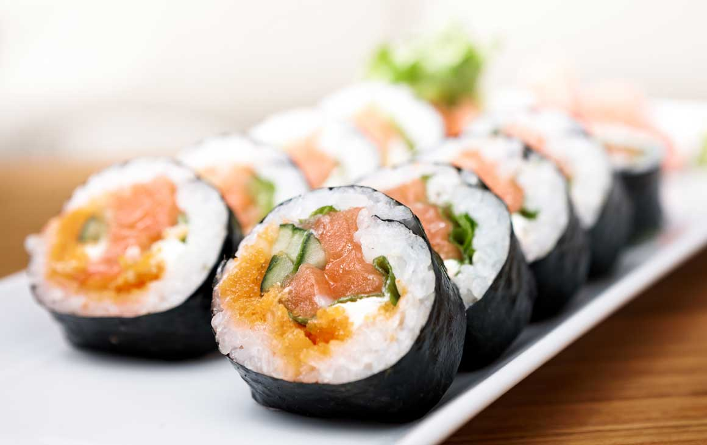

🍣Sushi Recipe🍣

Description
If you love sushi and want to eat it at home, you’ve come to the right place. At Odin Recipes, we’re going to teach you easy recipes that you can enjoy both alone and with good friends or family. Sushi is a very good option if you want something exquisite and, although it’s hard to believe, easy to make! You just need to have the right ingredients and utensils to have the best Sushi, want to know how?
Learn to make your own Sushi and leave everyone amazed with this recipe, which I’m sure, will become one of your favorite dishes to make, there’s nothing better than making quality, economical, artisanal and above all, delicious dishes!
Ingredients
- 2 cups of sushi rice
- 2 cups of water
- 75ml of sushi vinegar (all of this can be bought in specialized stores for Japanese food)
- 4 sheets of seaweed paper (nori)
- 1/2 cups of sesame seeds
- 100g. cream cheese
- 1 seedless cucumber
- 1 ripe avocado
- 4 peeled and cooked shrimp
Utensils
- 1 makisu (bamboo mat for rolling sushi)
- Pot


Steps
- Wash the rice very well, until the water comes out clear, let it drain, boil the rice with water over medium heat, then cover it; let it boil on high heat for 2 minutes, then on medium heat for 5 minutes, and finally, on low heat for 15 minutes.
- Let it absorb the rest of the water.
- Try not to uncover the pot to get better results.
- Remove the lid, cover with a cloth and let it cool for 10 minutes.
- Pour it into a refractory and move it constantly, adding the vinegar until it is cold, keep it covered with plastic.
- Place the makisu, on top a sheet of nori covered with rice and sprinkle sesame seeds.
- Flip the sheet, on the edge place a thin layer of cream cheese, a strip of cucumber, one of avocado and shrimp.
- Keep rolling and pressing with the makisu until you form the rolls, follow the same procedure with the other seaweeds.
- Moisten a knife with water, cut the rolls into 6 or 8.
- Serve it accompanied by soy sauce with lemon and orange juice.
- Also with this recipe, combine it instead of shrimp, make it with salmon, crab, tuna.